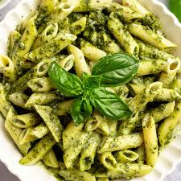

Home
Pesto Pasta Recipe

Description :
This top-rated pesto pasta recipe, which comes together in just 15 minutes, is the perfect quick and easy weeknight dinner.
Ingredients :
- 200g pasta (like spaghetti, penne, or fusilli)
- 2 cups fresh basil leaves
- 2-3 cloves garlic
- 1/2 cup pine nuts
- 1/2 cut grated Parmesan cheese
- 1/2 cup extra virgin olive oli
- Salt, to taste
- Black pepper ,to taste (optional)
- 1-2 tsp lemon juice(optional, for freshnees)
Instructions:
Step :
- Cook the pasta according to package instructions until al dente. Drain and set aside.
- In a food processor, combine the basil leaves, garlic, pine nuts, and Parmesan cheese. Pulse until finely chopped.
- With the food processor running, slowly drizzle in the olive oil until the mixture is smooth and creamy. Season with salt and pepper to taste.
- Toss the cooked pasta with the pesto sauce until well coated. If desired, add lemon juice for extra freshness.
- Serve immediately, garnished with additional Parmesan cheese and fresh basil if desired.